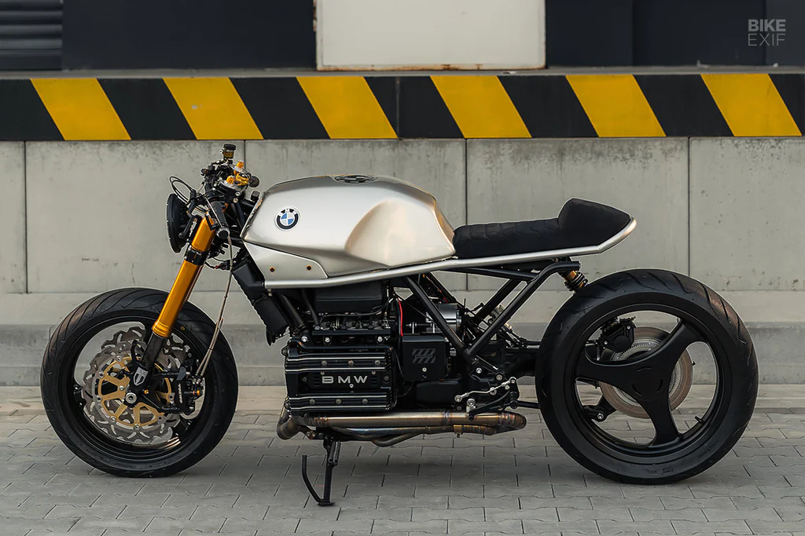

Ingeniería, Arte y Cafe Racer
En Custom Moto Lab no fabricamos motos en serie. Cada proyecto es una declaración de intenciones, una pieza única de ingeniería diseñada a medida.
Fusionamos el espíritu nostálgico de las Cafe Racer clásicas con tecnología moderna y acabados de alta costura, creando motocicletas que no solo se conducen, sino que se sienten.
Desde el mecanizado de piezas exclusivas hasta la selección meticulosa de texturas y pinturas, nuestro estudio en el corazón de la ciudad es el lugar donde las leyendas cobran vida.
